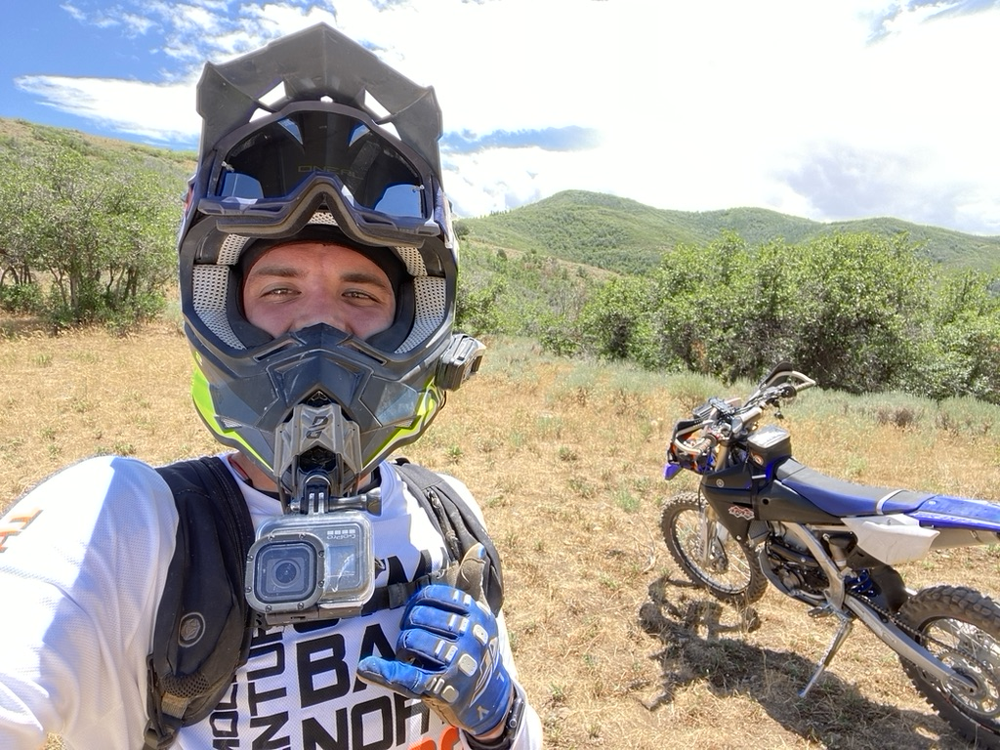
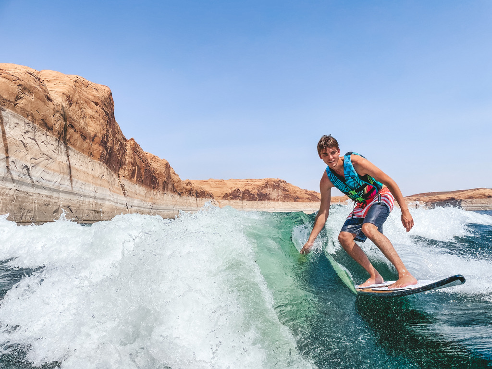

Home Page |
Resume |
About Me |
PD Design Studio
About Me:
Some of my favorite hobbies include dirt biking and surfing with friends and family!
Something interesting about me...


- Some of my favorite spots to go
- I love to go to Baja MX.
- My other favorite spot to go is Lake Powell!
- Why they are my favorite
- Nothing is more fun than a full week of riding with other skilled riders.
- Lake Powell is great because when its just never too hot to jump in the lake!
My favorite sport is Dirtbiking, my favorite ride is down in Baja Mexico.
This where the Baja 1000 and Baja 500 take place every year. And every year I get the oppurtinity to ride the same trails that are raced on. Here is a short clip on how epic the terain and landscap is in Baja Mexico!
Back to the top